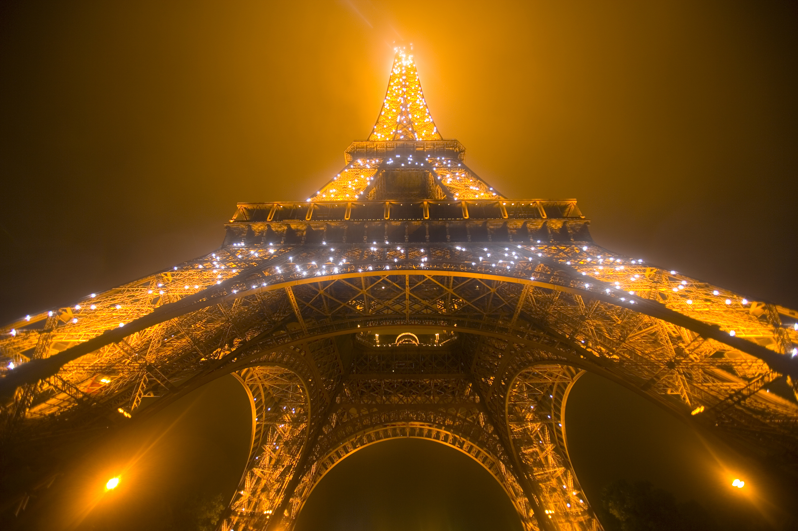
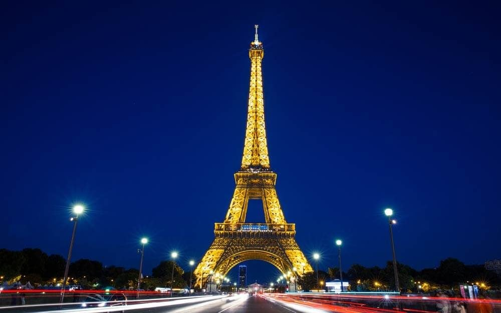

Eiffel Tower
A Place to Visit and Discover New Things

Home
About
History
Facts
Contact
Interesting Facts About the Eiffel Tower
The tower was initially meant to be dismantled after 20 years but was saved due to its usefulness as a radio transmission tower.
During World War II, the French cut the tower’s elevator cables so that German forces had to climb it on foot.
The Eiffel Tower expands by about 15 cm (6 inches) in the summer due to heat expansion.
It takes around 60 tons of paint to repaint the tower every seven years.
Over 300 million people have visited the Eiffel Tower since its opening
